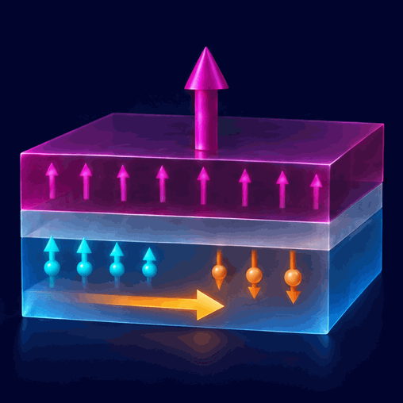
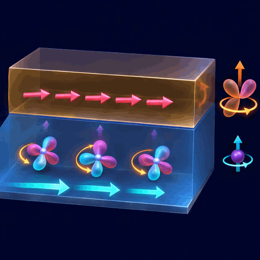
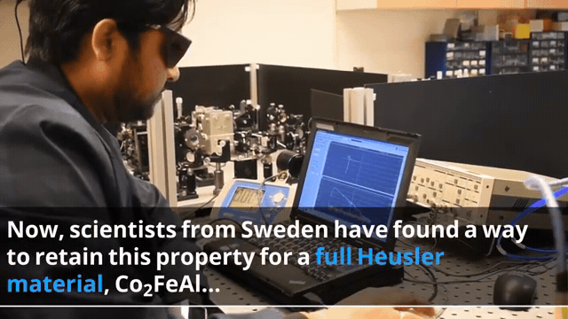

Research
The GHYAN lab explores the intersection of fundamental quantum physics and next-generation device applications, focusing on spin and orbital angular momentum in thin films, 2D heterostructures, and nanodevices.
Research Areas
Core experimental thrust areas investigating quantum angular momentum, ultrafast dynamics, and device physics
Magnetism & Spintronics
We study the fundamental magnetic properties of novel materials and how electron spin can be utilized for energy-efficient memory and logic devices. By understanding spin transport, spin-orbit torque (SOT), and magnetization dynamics, we aim to design next-generation magnetic RAM (SOT-MRAM) and spin-logic architectures that drastically reduce standby and switching power consumption.
-
Harnessing orbital Hall effect in spin-orbit torque MRAM ↗
Nature Communications 16, 130 (2025)
-
Strong In-Plane Magnetization and Spin Polarization in CFGT/Graphene Heterostructure Spin-Valve ↗
ACS Nano 18 (7), 5240–5248 (2024)
-
Emergence of spin–orbit torques in 2D transition metal dichalcogenides: A status update ↗
Applied Physics Reviews 7, 041312 (2020)

Orbitronics
Beyond the spin degree of freedom, orbital angular momentum offers an exciting, energy-efficient dimension for information processing. We investigate orbitally-driven transport phenomena, including the orbital Hall effect (OHE) and orbital Rashba-Edelstein effect, in light metals (such as Ru, Cr, etc.) and transition metal oxides, unlocking pathways for high-efficiency torque generation without relying on heavy or scarce elements.
-
Identification of orbital pumping from spin pumping and rectification effects ↗
Nano Letters 25 (36), 13462–13467 (2025)
-
Itinerant orbital Hall effect mechanism leading to large negative orbital torques from light metal vanadium ↗
arXiv:2508.16339 (2025)
-
Nonreciprocity in magnon mediated charge-spin-orbital current interconversion ↗
Nano Letters 25 (8), 3247–3252 (2025)

Terahertz Spintronics
Exploring the generation, manipulation, and detection of terahertz (THz) radiation using ultrafast spintronic heterostructures. By exploiting inverse spin and orbital Hall effects, anomalous Hall phenomena, we develop ultra-broadband, low-cost spintronic THz emitters (STEs) for high-speed wireless communication, radar, and non-destructive spectroscopic imaging.
-
Terahertz emission from β-W/CoFe epitaxial spintronic emitters ↗
arXiv:2401.10123 (2024) (accepted in Scientific Reports)
-
Direct evidence of terahertz emission arising from anomalous Hall effect ↗
Scientific Reports 13, 5988 (2023)
-
Co2FeAl Full Heusler Compound Based Spintronic Terahertz Emitter ↗
Advanced Optical Materials 9 (10), 2001987 (2021)

Quantum Sensing (NV Sensing)
We aim to utilize nitrogen-vacancy (NV) diamond center magnetometry and atomic-scale quantum sensors to non-invasively probe nanoscale spin configurations, stray magnetic fields, and spin currents with high spatial resolution and sensitivity. By integrating NV center quantum defects with magnetic heterostructures, 2D quantum materials, and spintronic devices, we investigate local spin-orbit torque switching, magnon dynamics, and topological spin textures (such as domain walls and skyrmions) from cryogenic to room temperatures.
-
Three‐Dimensional Anomalous Hall Sensing Enabled By Spin–Orbit Torque Driven Domain Reconfiguration ↗
Advanced Functional Materials 36 (70), 2600059 (2026)
-
Single-device offset-free magnetic field sensing with tunable sensitivity and linear range ↗
Physical Review Applied 20, 044079 (2023)

Research Grants and Funding
External and institutional sponsored research projects supporting our experimental investigations and laboratory infrastructure
GHYAN Laboratory Establishment & Faculty Research Grant
Indian Institute of Technology (Indian School of Mines), Dhanbad
General Physics Scholarship, Project QRBIT-Q
The Royal Swedish Academy of Sciences (Kungliga Vetenskapsakademien), Sweden
T-SHNO: Terahertz Spin Hall Nano Oscillator
Swedish Research Council (Vetenskapsrådet - VR) • Project ID: 2023-06605
Erasmus+ Staff Exchange Fellowship
International Office, Uppsala University, Sweden
Collaborations
Our group actively collaborates with leading international and national research institutions, university departments, and industry partners
Global Collaboration Network
Our research group maintains a vibrant network of collaborators across Europe, North America, and Asia. The map below visualizes our international partnerships, highlighting the locations of our collaborators and their respective institutions.
Johannes Gutenberg University Mainz
Uppsala University
University of Gothenburg
Aix-Marseille University
University of Vienna
University of Central Florida
University of South Florida
Indian Institute of Technology Delhi
Örebro University
Chalmers University of Technology
S. N. Bose National Centre for Basic Sciences
Empa – Swiss Federal Laboratories
Central Research Facility (CRF), IIT (ISM)
Interested in collaborating or pursuing graduate / postdoctoral research with GHYAN Lab?